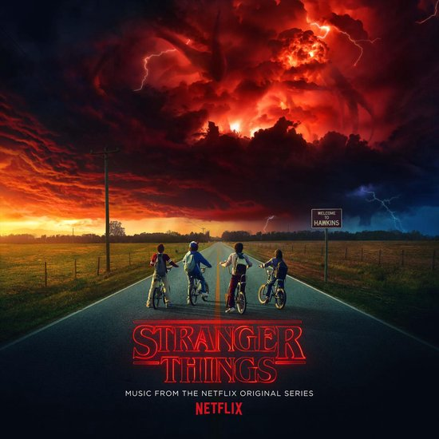
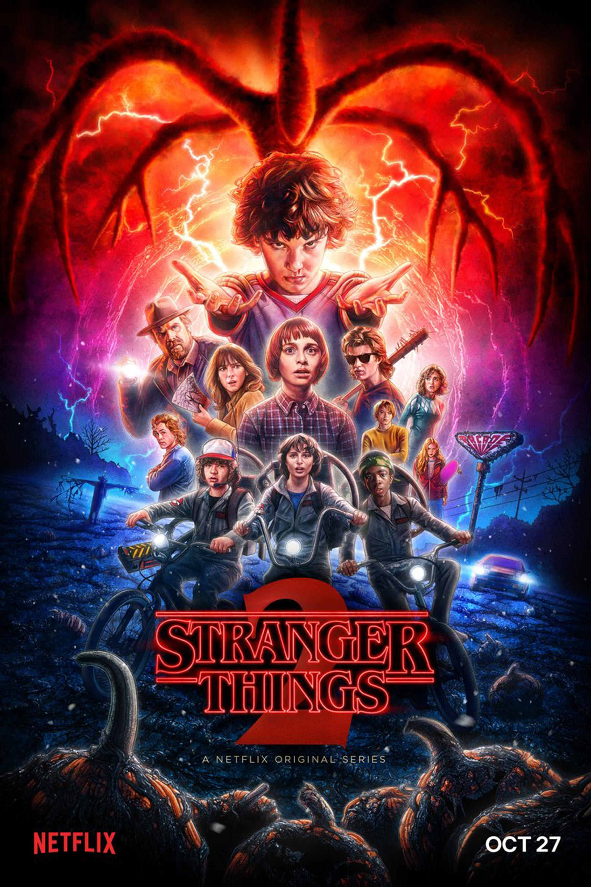
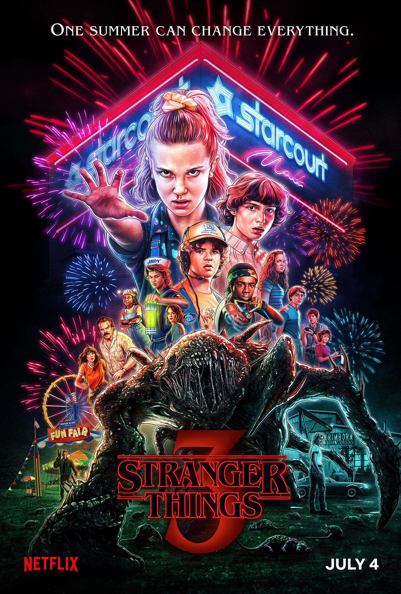

Stranger Things 1
 Will Byers is vermist en spoorloos verdwenen. Dustin, Lucas en Mike waren zijn beste vrienden. Zij gingen daarom in het bos een zoektocht houden naar Will. Daar kwamen ze een meisje genaamd Eleven tegen. Ze was kaal en zag er verwildert uit en ze zei geen woord. Uiteindelijk komen de jongens erachter dat Eleven telekinetische krachten heeft. Dat betekent dat ze dingen kan laten bewegen met haar brein. Eleven bleek ontsnapt te zijn uit een lab waar haar vader kinderen met telekinetische krachten trainde. Dr.Brenner en zijn mannen zijn opzoek naar Eleven. Ook de moeder van Will (Joyce) was naar hem opzoek toen de elektriciteit in haar huis gek begon te doen en de telefoon vaak ging maar ze hoorde alleen gegrom. Ze dacht dat Will dit was. Eleven probeert de zoektocht naar Will te helpen en zegt dat Will vast zit in 'the upside down'. Ze komen er ook achter dat de overheid geheimen heeft.
Stranger Things 2
 In het tweede seizoen Is Will weer terug gevonden en probeert hij weer terug te gaan naar zijn leven voor alles gebeurt was. Hij kreeg veel aanvallen waarvan zijn dokters dat het door ptsd kwam, maar in realiteit zijn er weer krachte van the upside down die op hem werken. Hij was nog verbonden met "The Mind Flayer". Eleven woonde bij Hopper maar was na een hevige discussie vertrokken. Ze wilde haar moeder Jane vinden. Dat was gelukt maar uiteindelijk komt ze terug naar Hawkins om haar vrienden te redden. Er werden ook een aantal nieuwe personen ontmoet in de serie waaronder Maxime en haar broer Billy.
Stranger Things 3
 In het derde en laatste seizoen heeft Dustin een vriendinnetje die hij proeert te bereiken met zijn zelf gemaakte apparaat. Het lukte echter niet en de rest van zijn vrienden verlaten hem. Later vind hij op zijn apparaat een Russische code zin. Met Steve, Robin en Erica komt hij erachter dat er geheime russen experimenten aan het doen zijn bij het winkelcentrum: "Starmall" in Hawkins. Ondertussen komen Will, Eleven, Mike en Max erachter dat de Mind Flayer terug is en veel meer mensen en kracht heeft. Hij wil Will weer in zijn macht hebben. Uiteindelijk wordt de Mind Flayer gedood door Billy, dat is de broer van Max is die onder invloed was van de Mind Flayer maar hij had zichzelf opgeoffert voor zijn zusje Max en haar vrienden.